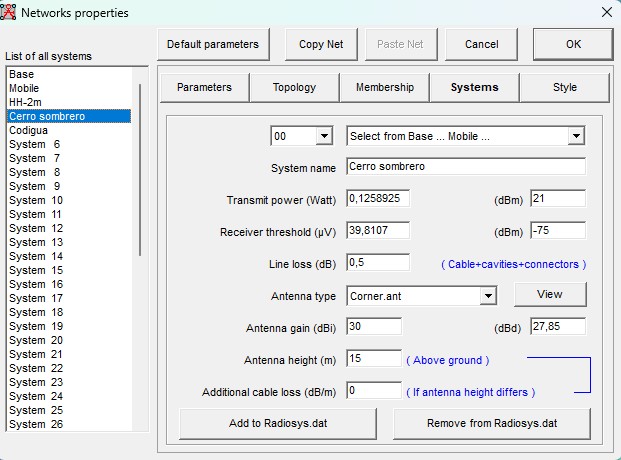
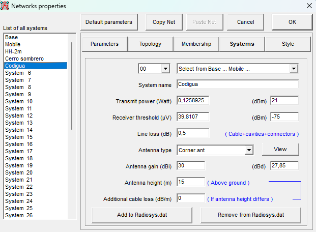

Capítulo 02 · Módulo 05
Systems: los perfiles del enlace.
Configurar Cerro Sombrero y Codigua con los valores finales del escenario de 20 MHz.
Un perfil para cada extremo
En Systems definimos los parámetros de radio y antena de cada perfil. Usaremos dos perfiles con los mismos valores, uno llamado Cerro sombrero y otro Codigua; así será fácil asignarlos a sus unidades en Membership.
El escenario final de este módulo utiliza airFiber 5XHD, 5800 MHz, canal de 20 MHz y 64QAM (6x). La frecuencia ya se estableció en Parámetros. El ancho de canal y la modulación explican qué sensibilidad debemos introducir aquí.
Configurar los perfiles
- Abre Networks properties, entra en Systems y selecciona el perfil destinado a Cerro Sombrero en la lista de sistemas.
- Escribe su nombre y completa los valores de la tabla. En potencia y umbral puedes introducir dBm y comprobar la conversión que muestra el programa.
- Selecciona otro perfil para Codigua y repite los mismos valores, cambiando únicamente el nombre.
Valores finales, parámetro por parámetro
| Parámetro | Cerro Sombrero | Codigua | Qué configura |
|---|---|---|---|
| System name | Cerro sombrero | Codigua | Nombre del perfil que después seleccionaremos para cada unidad en Membership. |
| Transmit power (dBm) | 21 dBm | 21 dBm | Potencia de salida del radio. |
| Receiver threshold (dBm) | −75 dBm | −75 dBm | Umbral de recepción del modo evaluado: 20 MHz y 64QAM (6x). |
| Line loss (dB) | 0,5 dB | 0,5 dB | Pérdidas fijas de cables y conectores; se usa esta estimación para el escenario. |
| Antenna type | Corner.ant | Corner.ant | Archivo del patrón direccional que utilizamos para la simulación. |
| Antenna gain (dBi) | 30 dBi | 30 dBi | Ganancia elegida para la antena del escenario. |
| Antenna height (m) | 15 m | 15 m | Altura de la antena sobre el terreno local, no sobre el nivel del mar. |
| Additional cable loss (dB/m) | 0 dB/m | 0 dB/m | Sin corrección adicional por cambios de altura; las pérdidas fijas se registran en Line loss. |
La tabla muestra la potencia y el umbral en dBm, y la ganancia en dBi, como se introducirán en los campos correspondientes.
Perfil de Cerro Sombrero

Perfil de Codigua

Por qué usamos −75 dBm
La sensibilidad depende del ancho de canal y de la modulación. La ficha del AF-5XHD indica −75 dBm para 20 MHz y 64QAM (6x). El escenario inicial de 40 MHz usaba −71 dBm; al evaluar 20 MHz corresponde actualizar el umbral de los dos perfiles.
Este cambio permite trabajar con una señal más débil a cambio de menor capacidad. Cambiar el número del umbral por sí solo no configura el ancho de canal del radio: debe representar el modo que estamos estudiando.
Dato del fabricante: AF-5XHD · sensibilidad por ancho de canal y modulación, página 9. Para leer las unidades y condiciones, consulta cómo interpretar el datasheet.
Revisar el patrón y guardar
El botón View permite consultar el patrón seleccionado. Add to Radiosys.dat y Remove from Radiosys.dat gestionan perfiles de la biblioteca; para este procedimiento completamos los perfiles del proyecto sin modificar esa biblioteca. Confirma los cambios con OK y guarda el proyecto.
Continuar en Membership
Después de Systems, entra en Membership y asigna Cerro sombrero a la unidad Cerro Sombrero y Codigua a la unidad Codigua. Los roles serán Master y Slave, respectivamente. En Antenna height selecciona System para tomar los 15 m del perfil y orienta cada antena hacia el otro sitio.